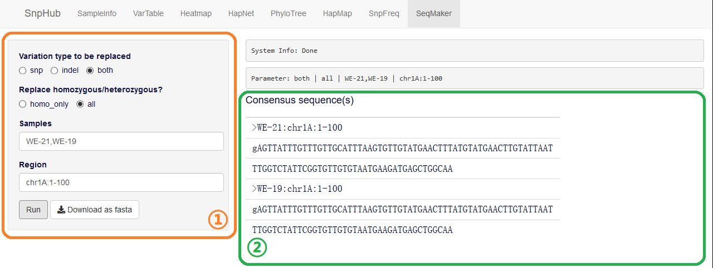

Creating Consensus Sequence with SeqMaker
In this channel, you can create a consensus sequence by substituting variants based on the reference genome, and the result can be downloaded directly as FASTA file.

1. UI
Options here are pretty simple.
Variation type to be replaced: to choose whether to exchange snp or indel variation only, or to exchange all variations.
Replace homozygous/heterozygous?: choose whether to change homozygous mutation only.
Samples: sample names are wanted here. There are three ways are available to input:
- Pure sample name list. Sample names are divided by comma (,), such as
sample1,sample2,sample3. - Pure group list. Use a # before group name to transfer group into sample name list, such as
#pre-defined-group-name-1,#pre-defined-group-name-2. - Mixed list. Something looks such as
sample1,sample2,sample3,#pre-defined-group-name-1.
- Pure sample name list. Sample names are divided by comma (,), such as
Region: a region is wanted here. Input format should be
chr:from-to, such aschr1A:1-100. You could find all the available chromosomes and their maximum length inSampleInfopanel. Also, gene name is acceptable.
2. GIF Demonstration